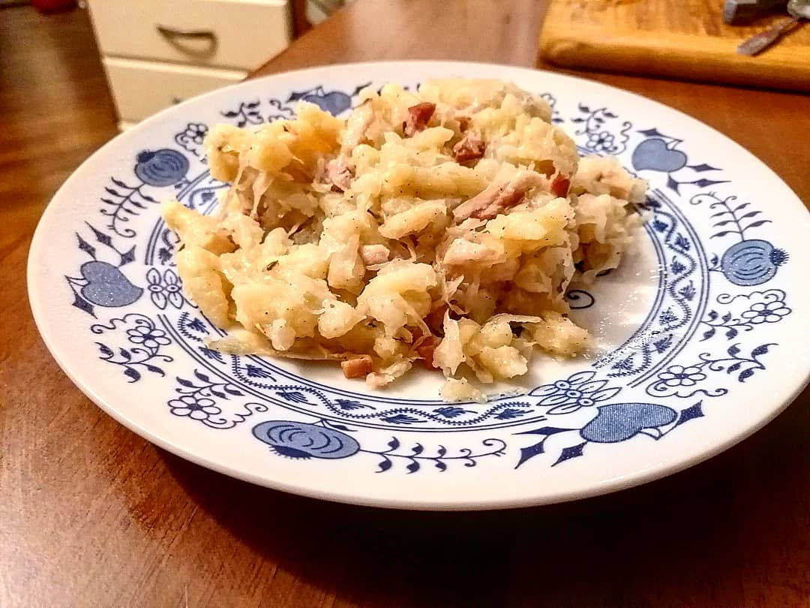

Strapačky s kapustou podľa @glennoverdrivemusic — Normy Jedál
Klasika musí byť 🇸🇰👌🏻🇸🇰 #kosice #košice #kosicecity #dnesjem #foodporn #foodpics #food #foodpic #instafood #foodtips #tasteofkosice #homemade #halusky #strapacky #strapačky #strapackyskapustou #slovakiafood #thisisslovakia #homecook #homecooking #homecooked #maninkitchen